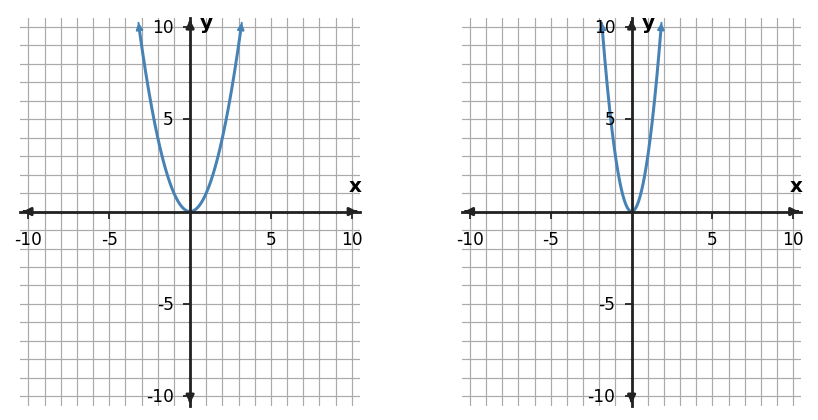

Algebra Practice 4.3 :::: Set 3
1. A student reflects only the points with positive x-values across the x-axis and calls the result a reflection of the whole function. Diagnose the error.
2. Describe the transformation from $y=x^2$ to $y=-x^2$.
3. The parent values come from $y=x^2$. Apply the rule $g(x)=-3f(x)$ and complete the transformed y-values.
| x | parent y | transformed y |
|---|---|---|
| -2 | 4 | ? |
| -1 | 1 | ? |
| 0 | 0 | ? |
| 1 | 1 | ? |
| 2 | 4 | ? |
4. Compare the left parent graph and the right transformed graph. Describe the transformation using stretch/compression/reflection language.

5. For $f(x)=x^2$, compare $g(x)=0.5f(x)$ with the table of points $(-2,2),(-1,0.5),(0,0),(1,0.5),(2,2)$. Do the equation and table represent the same transformed function? Explain.
6. The parent values come from $y=x^2$. Apply the rule $g(x)=-2f(x)$ and complete the transformed y-values.
| x | Parent y | Transformed y |
|---|---|---|
| -2 | 4 | ? |
| -1 | 1 | ? |
| 0 | 0 | ? |
| 1 | 1 | ? |
| 2 | 4 | ? |
7. Compare the left parent graph and the right transformed graph. Describe the transformation using stretch/compression/reflection language.

8. The parent values come from $y=x^2$. Apply the rule $g(x)=2f(x)$ and complete the transformed y-values.
| x | parent y | transformed y |
|---|---|---|
| -2 | 4 | ? |
| -1 | 1 | ? |
| 0 | 0 | ? |
| 1 | 1 | ? |
| 2 | 4 | ? |
9. Use the graph pair to describe how a key point changes under the transformation. Give one correct point mapping.

10. Apply the rule $g(x)=-2|x|$ to $f(x)=|x|$ and check the table values. Do all key points follow the rule?
| x | table value |
|---|---|
| -2 | -4 |
| -1 | -2 |
| 0 | 0 |
| 1 | -2 |
| 2 | -4 |
11. A student calls $g(x)=\frac12 f(x)$ a vertical stretch because the coefficient is positive. Correct the claim.
12. Describe the transformation from $y=x^2$ to $y=-2x^2$.
13. The parent values come from $y=x^2$. Apply the rule $g(x)=1.5f(x)$ and complete the transformed y-values.
| x | Parent y | Transformed y |
|---|---|---|
| -2 | 4 | ? |
| -1 | 1 | ? |
| 0 | 0 | ? |
| 1 | 1 | ? |
| 2 | 4 | ? |
14. The right graph is claimed to match $g(x)=-\frac{5}{4}f(x)-3$. Assess the claim using the visible shape and key features.

15. Assess whether $g(x)=0.5|x|+1$ and the table represent the same transformed function.
| x | table value |
|---|---|
| -2 | 2 |
| -1 | 1.5 |
| 0 | 1 |
| 1 | 1.5 |
| 2 | 2 |
16. A student doubles only the y-values for points with positive x and calls the result a vertical stretch by 2. Explain the error.
17. Describe the transformation from $y=x^2$ to $y=0.5x^2$.
18. A table is claimed to represent $g(x)=3f(x)$ for $f(x)=x^2$. Check the table and identify any incorrect transformed value.
| x | claimed $g(x)$ |
|---|---|
| -2 | 12 |
| -1 | 4 |
| 0 | 0 |
| 1 | 3 |
| 2 | 12 |
19. Describe the solution region for the system $y\gt x+2$ and $y\le-2x+5$, including which boundary is dashed and which is solid.
20. Describe the solution region for the system $y\lt2x+3$ and $y\ge-x-2$, including which boundary is dashed and which is solid.
21. Describe the solution region for the system $y\gt-0.5x+1$ and $y\le x+4$, including which boundary is dashed and which is solid.
22. Find and interpret the slope from $(1,1)$ to $(3,-1)$. Treat $x$ as hours and $y$ as miles from a reference point.
23. Find and interpret the slope from $(2,3)$ to $(5,4.5)$. Treat $x$ as hours and $y$ as miles from a reference point.
24. Find and interpret the slope from $(0,-3)$ to $(1,-1)$. Treat $x$ as hours and $y$ as miles from a reference point.